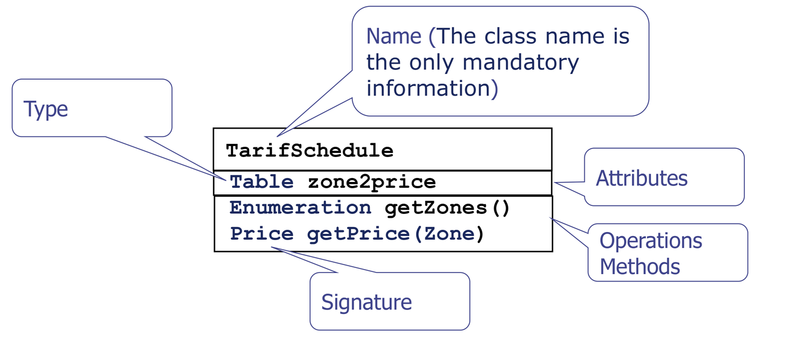
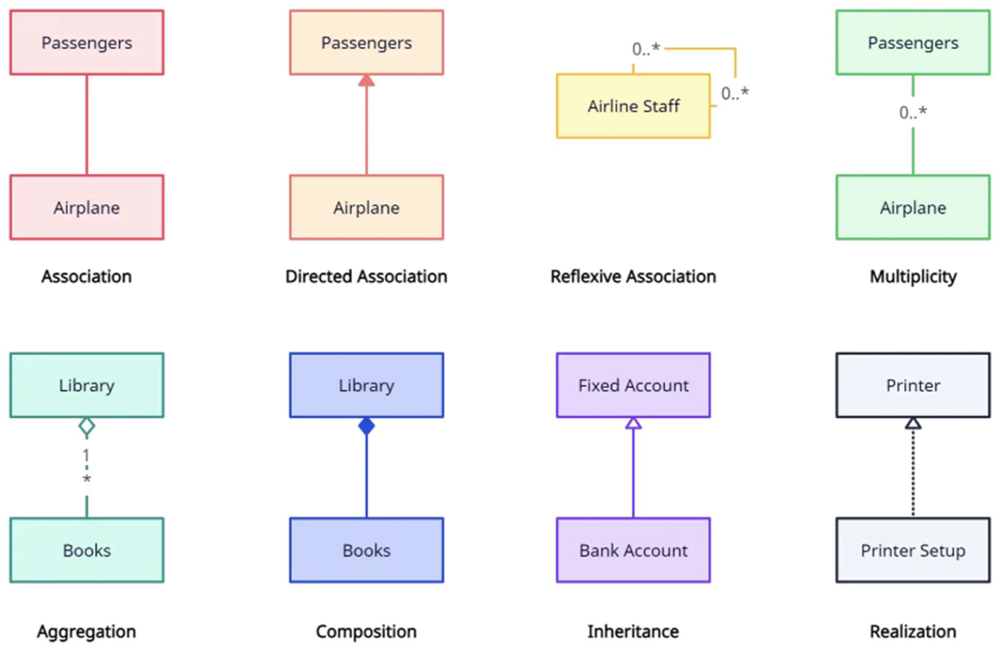
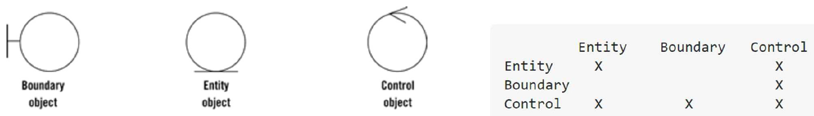
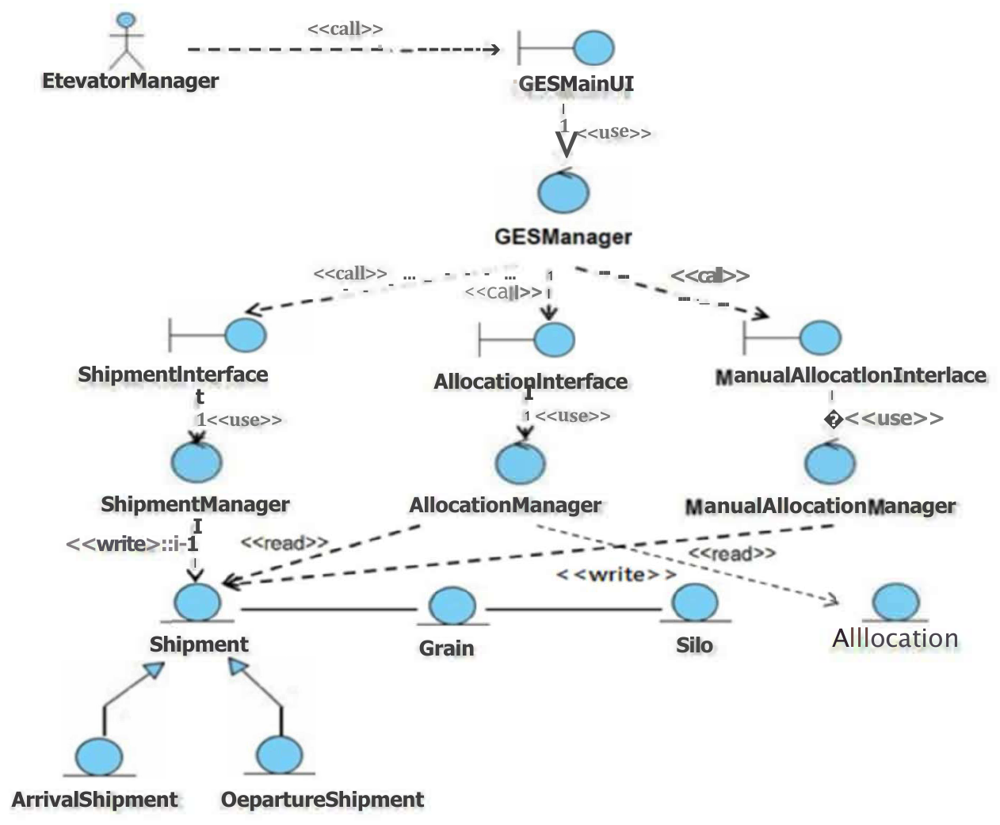

Requirements elicitation captures what users need using the vocabulary of the problem domain. Requirements analysis transforms those informal requirements into a formal, unambiguous engineering specification.
The primary artifact of structural analysis is the Conceptual Model (Domain Class Model). It defines the core abstractions, entities, and static relationships of the system before any implementation or database design decisions are made. In the SDLC, the conceptual model serves as the structural foundation for dynamic behavior modeling and subsequent architectural design.
1. From Elicitation to Analysis
| Dimension | Requirements Elicitation | Requirements Analysis |
|---|---|---|
| Primary Focus | Discovering customer needs and domain constraints. | Structuring requirements into formal engineering models. |
| Language | Customer/domain terminology (Use Cases, Scenarios). | Unified Modeling Language (UML Class, State, Activity Diagrams). |
| Key Artifacts | Actor hierarchy, Use Case Diagrams, Use Case Specifications. | Conceptual Model (Static structure) and Dynamic Models (Behavior over time). |
| Validation Role | Confirms whether developers understand user needs. | Verifies completeness, consistency, and detects missing requirements. |
2. UML Class Relationships and Multiplicity
A class represents a blueprint for a set of objects sharing common attributes, operations, and semantics:

Relationship Taxonomy
UML defines six fundamental relationships connecting classes:

| Relationship | UML Notation | Semantic Meaning | Lifecycle Invariant |
|---|---|---|---|
| Association | Solid line with optional open directional arrow. | A structural link indicating objects of one class know about or interact with objects of another. | Independent lifecycles. |
| Aggregation (“Has-a”) | Solid line with a hollow diamond at the aggregate (“whole”) end. | Weak whole-part relationship. The part can exist independently of the whole. | Non-coincident lifecycle. Destroying the whole does
not destroy the part (e.g., Department
—
Professor). |
| Composition (“Part-of”) | Solid line with a filled diamond at the composite (“whole”) end. | Strong whole-part ownership. The part belongs exclusively to one whole. | Coincident lifecycle. Destroying the whole
automatically destroys the constituent parts (e.g.,
Building
—
Room). |
| Generalization (“Is-a”) | Solid line with a hollow triangular arrow pointing to the superclass. | Inheritance relationship where the subclass inherits attributes and operations from the superclass. | Child specializes parent. |
| Realization | Dashed line with a hollow triangular arrow pointing to the interface. | A concrete class implements the contract declared by an interface. | Structural contract compliance. |
| Dependency (“Uses-a”) | Dashed line with an open arrow pointing to the supplier class. | A transient relationship where a change in the supplier may affect the client. | Temporary runtime parameter or local variable usage. |
Reading Multiplicity Invariants
Multiplicities specify the number of allowed instances at the far end of an association:
1: Exactly one instance.0..1: Optional (zero or one instance).*or0..*: Zero or more instances (unbounded collection).1..*: At least one instance (non-empty collection).m..n: Specific closed integer interval.
[!IMPORTANT] Always Read Multiplicity at the Far End: In
Company 1 ──────── * Employee, read from left to right: “One Company employs zero or more Employees.” Read from right to left: “Each Employee works for exactly one Company.”
3. Boundary-Control-Entity (BCE) Stereotypes
During analysis, classes are classified into three architectural stereotypes (Jacobson’s Robustness Analysis):

- Entity Classes
(
<<entity>>):- Represent persistent domain information and core business entities
tracked across sessions (e.g.
Account,GrainShipment,Silo). - Store long-term state and encapsulate core business logic.
- Represent persistent domain information and core business entities
tracked across sessions (e.g.
- Boundary Classes
(
<<boundary>>):- Mediate interaction between external actors and the system
(e.g.
LoginForm,SensorInterface,ReportDisplay). - Insulate the core system from peripheral technologies, physical devices, and UI frameworks.
- Mediate interaction between external actors and the system
(e.g.
- Control Classes
(
<<control>>):- Coordinate business logic, transactions, and sequencing for a
specific use case workflow (e.g.
AllocationManager,LoginController). - Control objects are typically transient, created when a use case initiates and discarded upon completion.
- Coordinate business logic, transactions, and sequencing for a
specific use case workflow (e.g.
Robustness Communication Rules
To enforce strict separation of concerns, BCE objects must obey four fundamental communication rules:
[ Actor ] ──► [ Boundary ] ──► [ Control ] ──► [ Entity ]
│ │ ▲
│ └─────────────┘
▼
(Never directly touches Entity!)- Actors may interact only with Boundary objects.
- Boundary objects communicate only with Control objects and Actors. A boundary object must NEVER communicate directly with an entity object, and boundary objects never talk to other boundary objects.
- Control objects can communicate with Boundary objects, other Control objects, and Entity objects.
- Entity objects can communicate with other Entity objects or be queried/updated by Control objects. Entity objects must never invoke Boundary or Control objects directly.
4. Conceptual Class Diagram Derivation Toolkit
When constructing a conceptual model from requirements:
- Identify Candidate Entities (Noun Extraction): Scan
the use case descriptions and data dictionary for domain nouns
representing long-term system memory. Discard pure attributes (e.g.,
ageis an attribute ofCustomer, not an independent class). - Identify Boundary Classes: Assign at least one boundary class per interacting actor (e.g. GUI windows for human users, communication drivers for external hardware/sensors).
- Assign Control Classes: Assign one control coordinator per use case to encapsulate the operational sequencing.
- Establish Associations and Multiplicities: Connect classes based on structural domain links. Apply domain business rules to establish lower and upper bounds at each association end.
- Apply Generalization where Specializations Exist:
Factor common attributes and relationships into superclasses
(e.g.
ArrivalShipmentandDepartureShipmentgeneralize toShipment).
5. Official Tutorial Problems
Tutorial 3 Q1: Grain Elevator System conceptual class model and BCE analysis
Question: Refer to the Grain Elevator System (GES) shipment arrival and allocation functionality. From the use-case description and data dictionary: (a) Identify the analysis classes categorized by Entity, Boundary, and Control stereotypes. (b) Construct the initial and refined conceptual class diagrams showing associations, stereotypes, and dependency labels.
Solution:
Part (a): Identification of Analysis Classes
1. Entity Classes (Domain Information)
Shipment: Generalization superclass holding tracking number, supplier, and timestamp.GrainArrivalShipment: Specialization representing incoming grain delivery with measured quality metrics.DepartureShipment: Specialization representing grain loaded for outbound transport.
Silo: Storage container with maximum capacity, current grain type, and sensor readings.SiloAllocation: Association record linking an accepted arrival shipment to its target storage silo.
2. Boundary Classes (Interfaces to Actors)
GESMainUI: Primary user interface for system navigation.ShipmentInterface: Screen allowing operators to log incoming grain shipment metadata.AllocationInterface: Display interface presenting automated silo recommendations.ManualAllocationInterface: Screen allowing operators to override automated recommendations.
3. Control Classes (Use Case Logic)
ElevatorManager: High-level coordinator managing grain elevator operations.ShipmentManager: Coordinates the logging and validation of incoming shipments.AllocationManager: Executes algorithm matching grain type and moisture to available silo capacity.ManualAllocationManager: Handles supervisor overrides and records manual assignment justification.
Part (b): Refined Conceptual Class Diagram

Key Modeling Relationships:
- Inheritance:
GrainArrivalShipmentandDepartureShipmentinherit fromShipment(generalization with hollow triangle). - BCE Dependencies:
- Operator
ShipmentInterfaceShipmentManagerShipment. ElevatorManagerorchestratesShipmentManagerandAllocationManagervia dependencies.AllocationManagerreadsGrainArrivalShipmentandSiloto produceSiloAllocation.
- Operator
- Multiplicities:
- One
SiloholdsSiloAllocationrecords over time; eachSiloAllocationtargets exactlySilo. - Each
GrainArrivalShipmentproduces exactlySiloAllocationif accepted.
- One